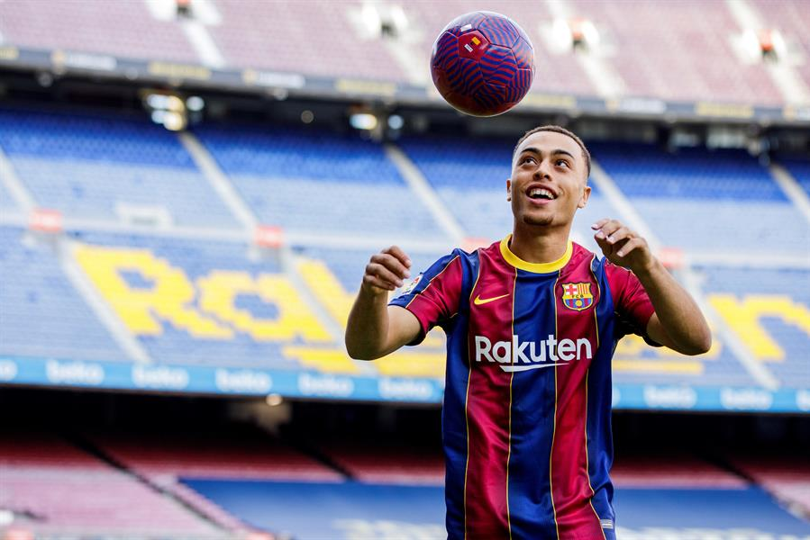
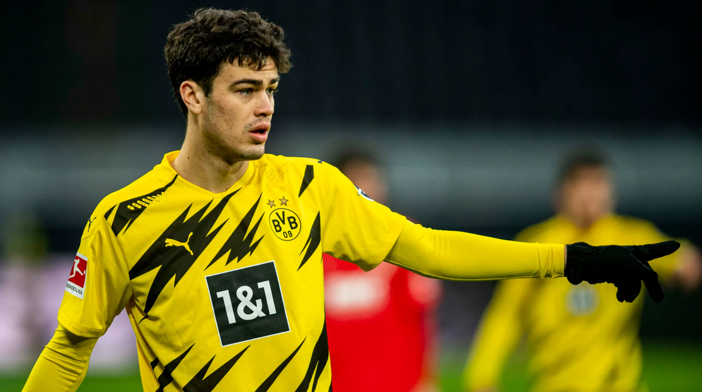
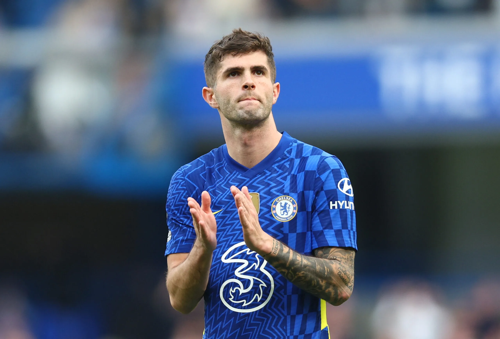

Localizam-se no continente americanoEstados Unidos da América traz varios jogadores profissionais de futebol. Aqui estão três principais jogadores dos estados Unidos.
 Sergiño Gianni Dest é um futebolista neerlandês-estadunidense que atua como lateral-direito. Atualmente joga no Milan Nascido nos Países Baixos, filho de mãe neerlandesa, Dest representa a Seleção dos Estados Unidos desde 2019 por ter um pai estadunidense.ui Também temos o Reyna.
 E por ultimop temos o Pulisic. 